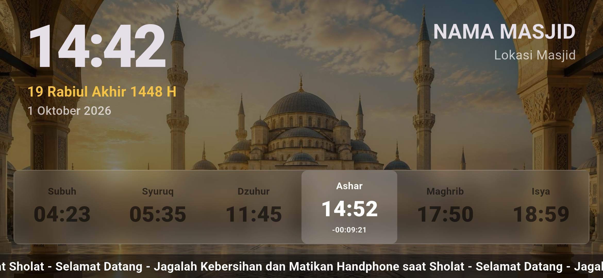

Gratis untuk masjid
Display Jadwal Sholat Digital untuk TV Masjid
Isyfi Pray menghitung jadwal sholat secara akurat di perangkat — metode Kemenag & Muhammadiyah — lalu menjalankan tampilan Adzan, Iqomah, dan Shalat secara otomatis. Sekali pasang, berjalan 24/7 tanpa dioperasikan.
Download APK (Gratis)
Segera Hadir di Play Store
Gratis — tanpa langganan, tanpa akun
Android TV, Android Box, atau tablet Android • Lanskap 16:9

Masalah → Solusi
✕
Masalah
- Jadwal ditempel dan diubah setiap hari
- Lupa mematikan HP saat sholat
- Laporan kas tidak transparan
✓
Solusi
- Jadwal dihitung otomatis di perangkat
- Transisi layar penuh berjalan sendiri
- Laporan kas digital di layar TV
Digunakan di berbagai masjid di Indonesia